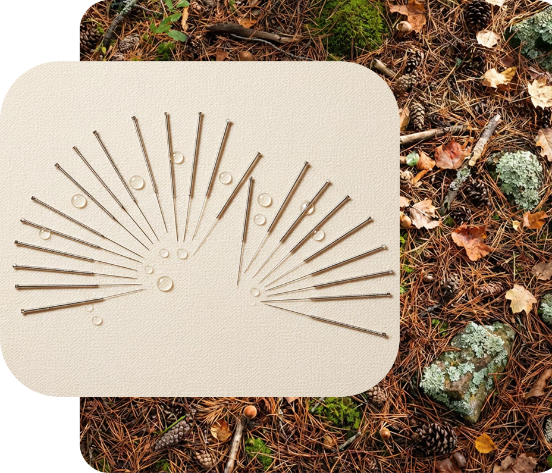
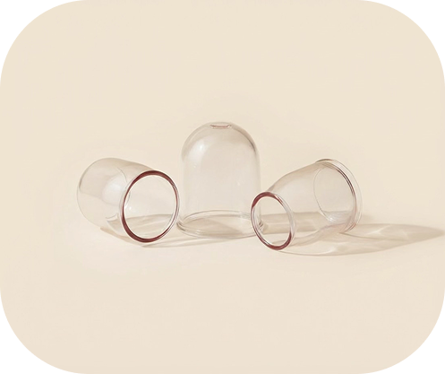
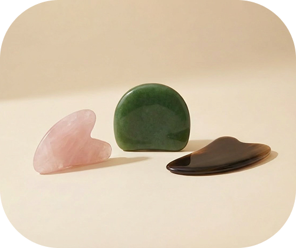
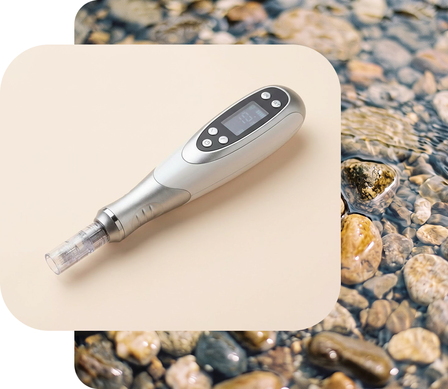

Lauren founded The Center for Chinese Medicine to share traditional Eastern healing therapies with the Western community. She believes Chinese Medicine should be accessible to everyday people and helps remove barriers so patients can fully experience its benefits.

Our acupuncture treatments are designed to restore balance, relieve pain, and support health and vitality through personalized, gentle care.
Book Session
Traditional Chinese cupping helps relieve pain, reduce inflammation, and promote recovery by increasing blood flow to targeted areas.

This hands-on treatment helps reduce pain, improve mobility, and promote circulation by releasing areas of tightness and stagnation.

Herbal medicine is prescribed based on your individual needs, using time-tested Chinese herbs to support healing, energy, and long-term wellness.
Book Session
Microneedling uses fine needles to encourage collagen renewal, helping reduce the appearance of fine lines, scars, and uneven skin texture.
Book SessionNew patient appointment: $150
Follow-up appointment: $100
Pediatric: $75
New patient appointment: $100
Herbal products at market price
Single session: $250
Package (4 sessions): $800
In network with Blue Cross Blue Shield of Montana and Tri West
Acupuncture is commonly used for pain (muscle, joint, and nerve), headaches, stress, anxiety, digestive issues, sleep problems, hormonal issues including fertility, and many chronic conditions. It also supports overall wellness and can be a complement to western therapies like chemotherapy.
Most people feel little to no pain. You may notice a brief pinch or a dull, achy, or tingling sensation. These are usually mild and short-lived, and they simply indicate that your body is responding to the needle.
From an Eastern perspective, acupuncture regulates the flow of Qi (energy) through meridians or channels in the body. From a Western view, it stimulates nerves, muscles, and connective tissue, promoting blood flow and triggering the release of natural biomolecules.
This varies depending on the condition and how long it has been present. Some people feel improvement after 1–4 sessions, while chronic conditions may require weekly treatments over several weeks
Your first visit includes a detailed health intake, discussion of your concerns, inspection of pulses and tongue, and a full acupuncture treatment. You’ll typically rest with the needles in place for 20–30 minutes. If bodywork (cupping or gua sha) or herbal formulas are warranted, they will be built into the treatment. Loose, comfortable clothing is suggested but not necessary.
Jesse Rodriguez
Lauren squeezed me in on labor day (she's a saint!), saw the pain I was in when I arrived, and got after it.I was able to walk again, with the majority of pain relieved 4 hours later.
Catherine Pecoraro
She greets you with a big smile and if for any reason you are a little anxious or feeling a little uneasy in that it's your first time receiving an acupuncture treatment you are in the best of hands.
Travis Lister
I've been there for a few procedures and it's helped me tremendously. Very nice atmosphere.